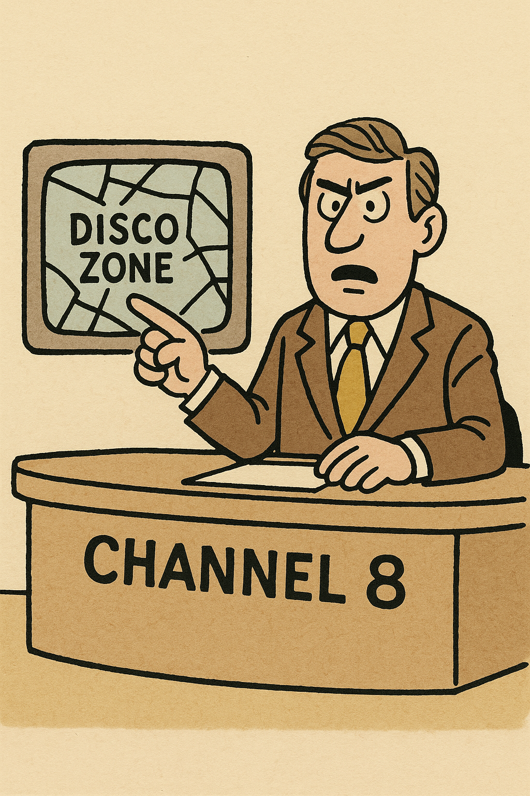
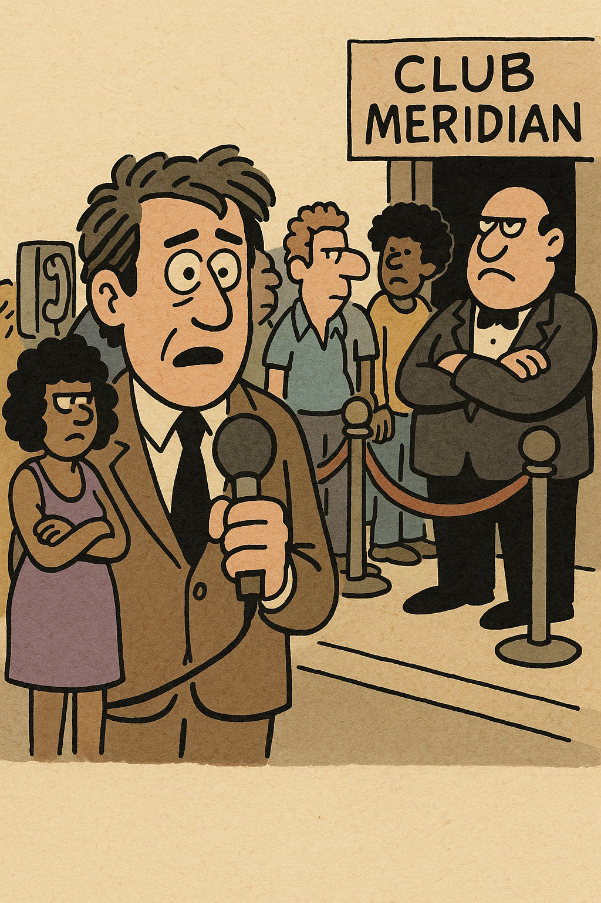
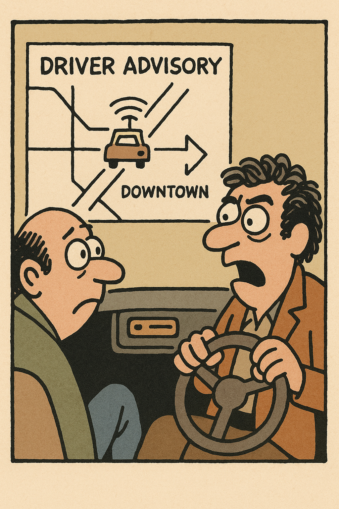
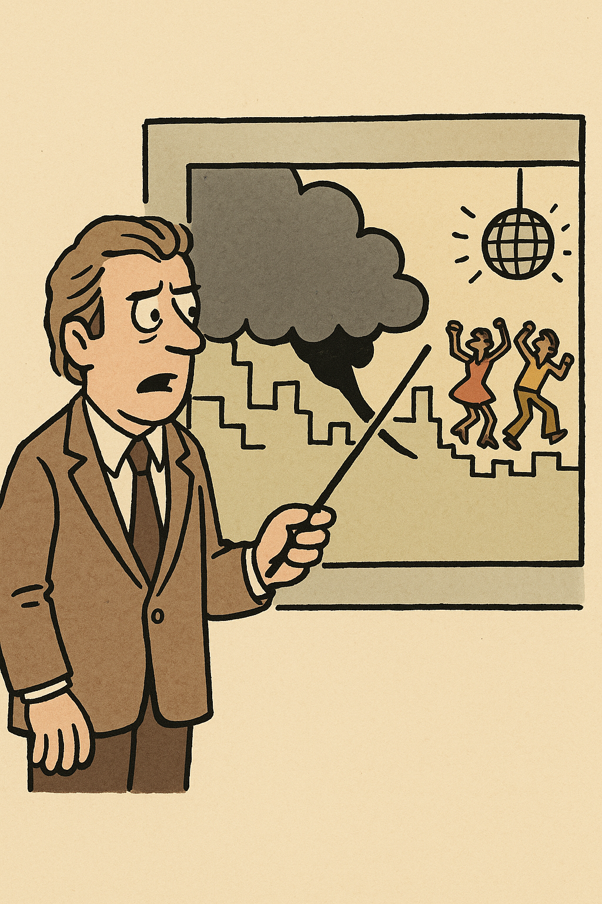
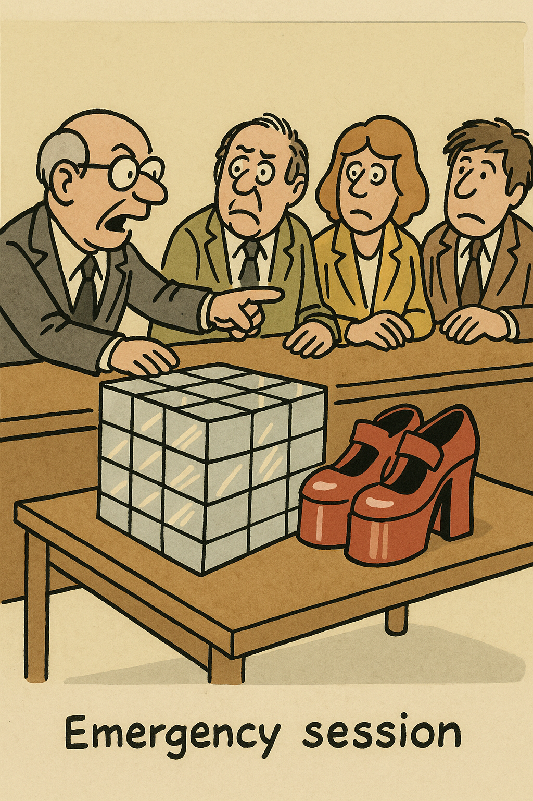
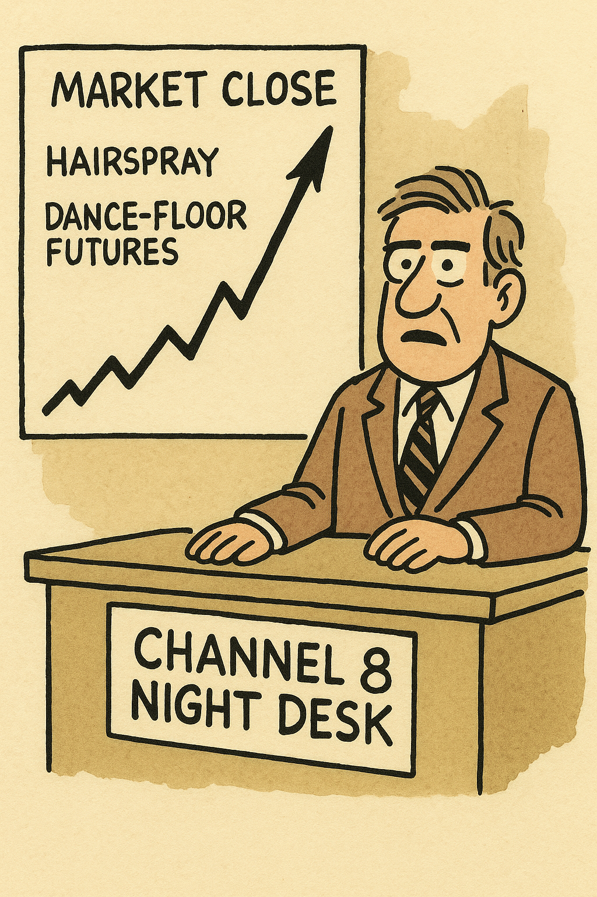

RetroVerse • 1978
Satire mode: Deadpan Media
A straight-faced local TV bulletin follows disco congestion, radio overexposure, and late-night civic order as if nightlife were a municipal beat.
Nobody on the broadcast is smiling. That is the point: every development arrives with the full gravity of public television, even when the crisis is a shortage of mirrored tile.

Panel 01
Opening Bulletin
Good evening. City officials confirm another sharp rise in after-hours foot traffic beneath the mirrored-ball district.
The station opens with the same tone it would use for a dock strike.
dialogue

Panel 02
Line Report
Witnesses say the queue outside Club Meridian now reaches the pay phones, though crowd discipline remains exceptionally rhythmic.
A field correspondent delivers nightclub congestion updates without blinking.
dialogue

Panel 03
Driver Advisory
Motorists are urged to keep one hand on the wheel and one near the radio. The Bee Gees are expected again at 11:20.
Late-night FM is treated as a public utility and a traffic condition.
dialogue

Panel 04
Weather Desk
A warm front of bass is moving in from downtown, with isolated outbreaks of coordinated stepping by midnight.
The forecast suggests heavy satin movement across the west side.
dialogue

Panel 05
Institutional Response
The Committee on Public Leisure has approved emergency shipments of mirrored tile and platform-heel rubber to the affected wards.
Municipal language makes the nightlife panic sound entirely reasonable.
dialogue

Panel 06
Closing Tease
Stay with us after the break for a market update on hairspray futures and the latest numbers from the regional dance-floor exchange.
The broadcast signs off as though nightlife has its own stock report.
dialogue